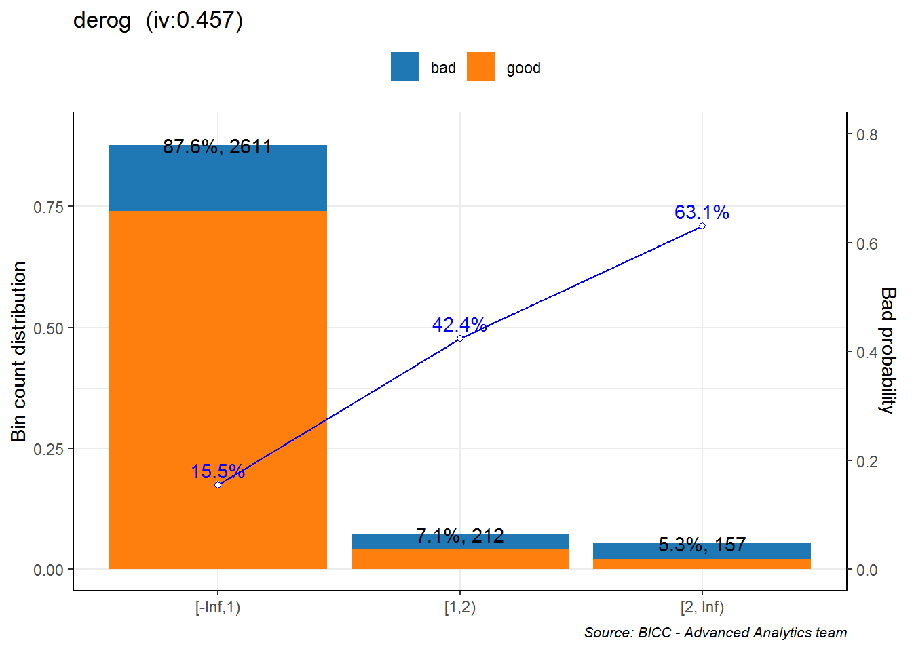
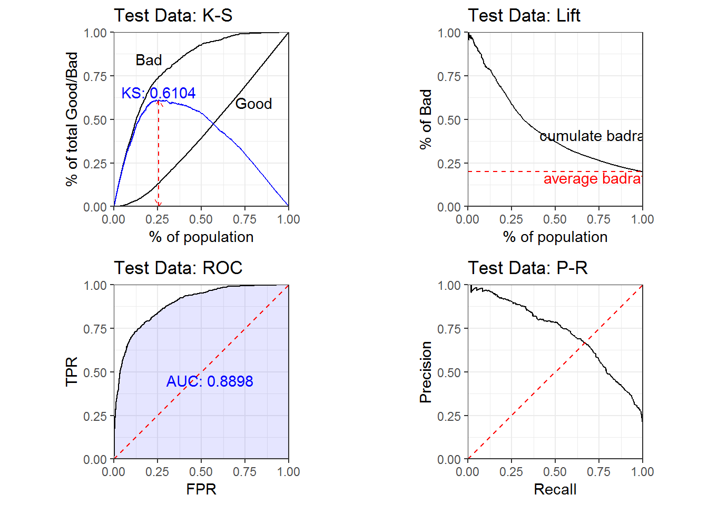
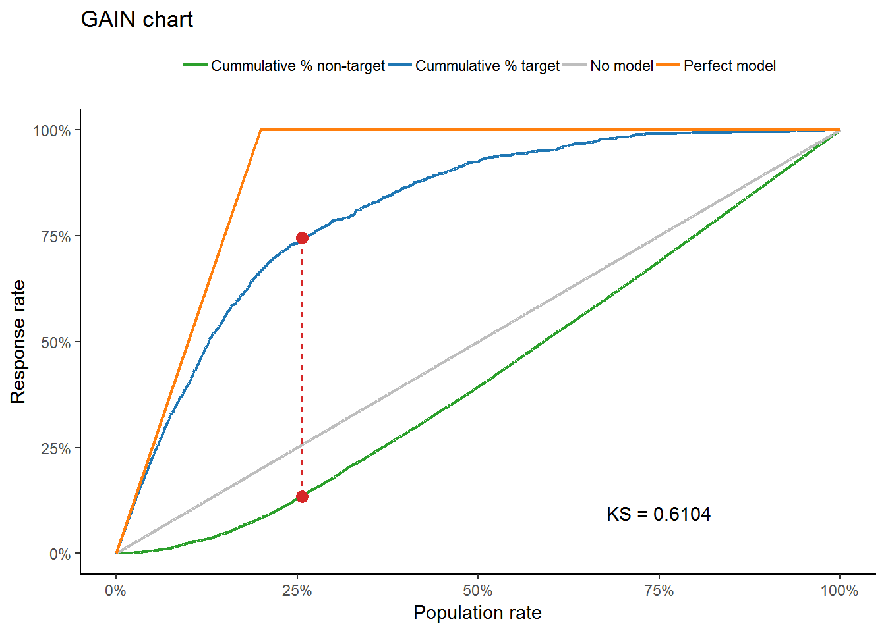
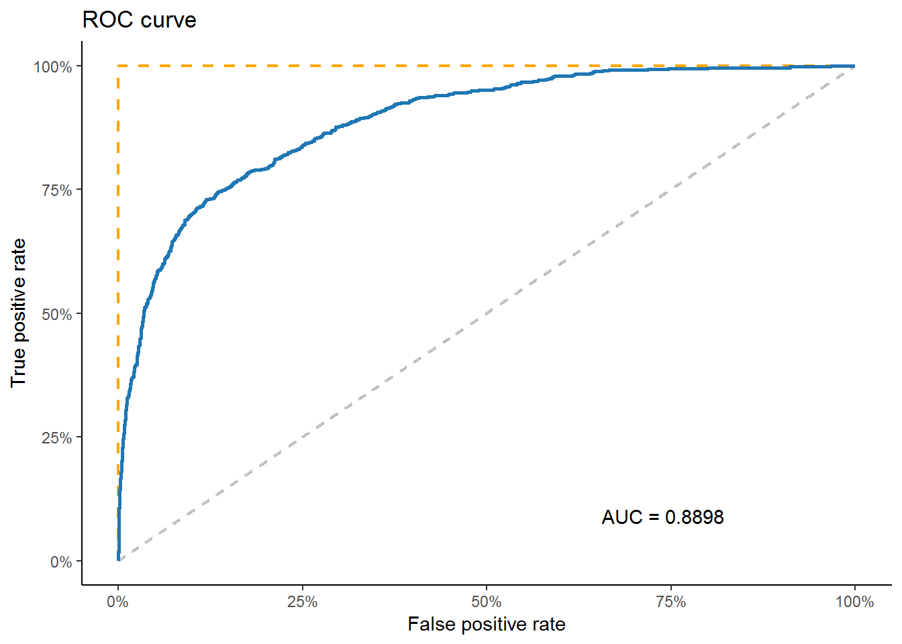
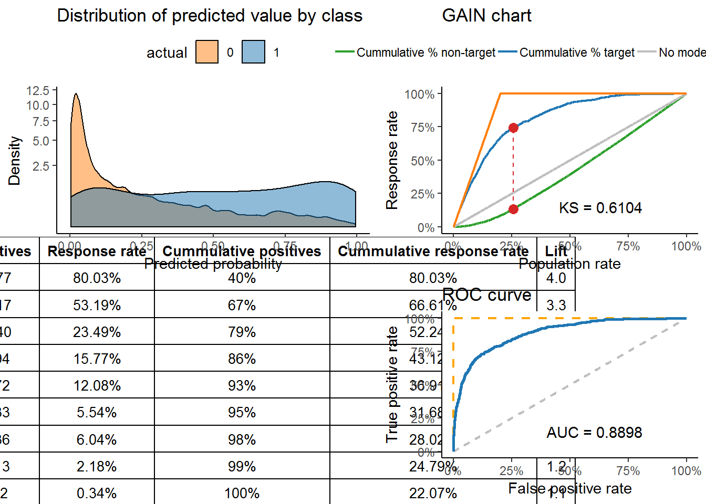
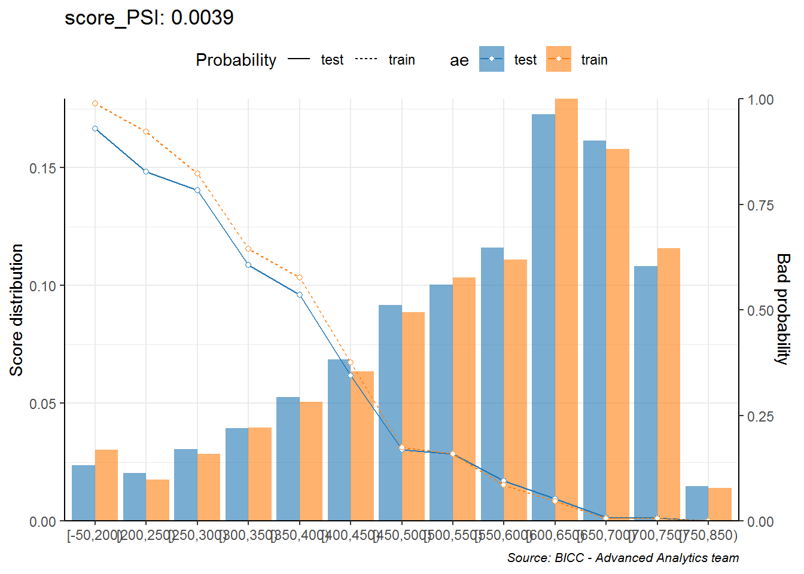
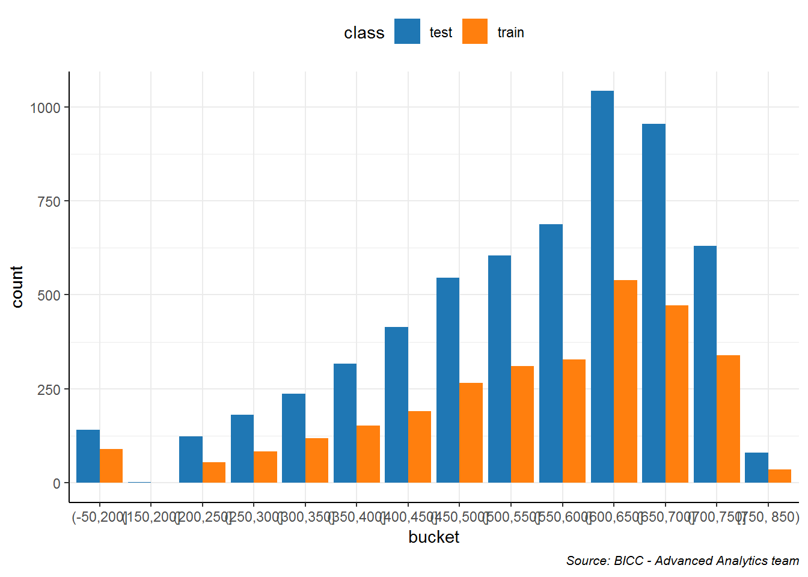

10. Credit Scoring¶
10.1. Score card¶
Khi xây dựng scorecard, cần chia bucket để dễ dàng hơn trong việc tính điểm
Các định nghĩa quan trọng:
- WOE (Weight of Evidence): Đo lường độ mạnh của việc phân loại good vs. bad giữa một nhóm (VD: age 27-29). Nếu WOE có giá trị âm càng lớn, càng thể hiện khả năng phân nhóm khoản vay xấu.
\[WOE = ln(\frac{Distr\:Good}{Distr\: Bad})\]
- IV (Informatio Value): Đo lường độ mạnh dự báo của biến dự báo với
biến cần được dự báo (response). Các đặc tính như sau:
- IV < 0.02: Không có giá trị dự báo
- 0.02 - 0.1: thấp
- 0.1 - 0.3: trung bình
- 0.3 - 0.5: cao
- Trên 0.5: Cần kiểm tra lại
\[IV = \sum_{i = 1}^{n}(Distr\:Good - Distr\:Bad)*ln(\frac{Distr\:Good}{Distr\:Bad})\]
{kind=link}
{kind=link}
Các quy tắc khi xây dựng:
- Mỗi bucket có tối thiểu 5%
- Khi nhóm các biến, cần đảm báo quy tắc WOE sau khi nhóm là tuyến tính (đồng biến hoặc nghịch biến)
Lưu ý: Xem thêm file excel (data/woe-example.xlsx)để hiểu rõ hơn
cách tính WOE và IV
10.2. Các bước xây dựng score card¶
- Bổ sung các thông tin dữ liệu bị thiếu
- Tính toán WOE và IV, loại các biến có IV quá thấp, kiểm tra lại các biến có IV quá cao
- Tạo tập mới là tập
df_woe, các biến đã được nhóm lại để tối ưu hóa WOE - Xây dựng mô hình
logisticđơn giản trên tậpdf_woe - Score dữ liệu mới, việc xây dựng score card cần thực hiện hai việc:
- Xác định odds tại mốc điểm scorecard nhất định
- Xác định điểm score card giúp tăng gấp đôi odds
10.3. Các tính score¶
- Điểm mặc định (
point 0) thường được dùng là 600. Mốc điểm này phản ánh một tỷ lệ odd cho trước (ví dụ: 30) - Điểm tăng gấp đôi odd (
point double ood - pdo): Là số điểm mà cứ tăng thêm pdo, odd sẽ tăng gấp đôi - thường là 20. Xem minh họa dưới đây
| Score | Odd |
|---|---|
| 600 | 30 |
| 601 | 31 |
| … | …. |
| 620 | 60 |
10.4. Xây dựng score card¶
data <- read.csv("http://www.creditriskanalytics.net/uploads/1/9/5/1/19511601/hmeq.csv")
save(data, file = "data/hmeq.rda")
library(tidyverse)
library(scorecard)
library(VPBank)
load("data/hmeq.rda")
names(data) <- names(data) %>% tolower
data %>% head
## bad loan mortdue value reason job yoj derog delinq clage ninq
## 1 1 1100 25860 39025 HomeImp Other 10.5 0 0 94.36667 1
## 2 1 1300 70053 68400 HomeImp Other 7.0 0 2 121.83333 0
## 3 1 1500 13500 16700 HomeImp Other 4.0 0 0 149.46667 1
## 4 1 1500 NA NA NA NA NA NA NA
## 5 0 1700 97800 112000 HomeImp Office 3.0 0 0 93.33333 0
## 6 1 1700 30548 40320 HomeImp Other 9.0 0 0 101.46600 1
## clno debtinc
## 1 9 NA
## 2 14 NA
## 3 10 NA
## 4 NA NA
## 5 14 NA
## 6 8 37.11361
- Kiểm tra dữ liệu missing
check_na <- function(x) {
(x %>% is.na %>% sum)/length(x)
}
data %>% map_df(check_na)
## # A tibble: 1 x 13
## bad loan mortdue value reason job yoj derog delinq clage ninq
## <dbl> <dbl> <dbl> <dbl> <dbl> <dbl> <dbl> <dbl> <dbl> <dbl> <dbl>
## 1 0 0 0.0869 0.0188 0 0 0.0864 0.119 0.0973 0.0517 0.0856
## # ... with 2 more variables: clno <dbl>, debtinc <dbl>
data %>% summary
## bad loan mortdue value
## Min. :0.0000 Min. : 1100 Min. : 2063 Min. : 8000
## 1st Qu.:0.0000 1st Qu.:11100 1st Qu.: 46276 1st Qu.: 66076
## Median :0.0000 Median :16300 Median : 65019 Median : 89236
## Mean :0.1995 Mean :18608 Mean : 73761 Mean :101776
## 3rd Qu.:0.0000 3rd Qu.:23300 3rd Qu.: 91488 3rd Qu.:119824
## Max. :1.0000 Max. :89900 Max. :399550 Max. :855909
## NA's :518 NA's :112
## reason job yoj derog
## : 252 : 279 Min. : 0.000 Min. : 0.0000
## DebtCon:3928 Mgr : 767 1st Qu.: 3.000 1st Qu.: 0.0000
## HomeImp:1780 Office : 948 Median : 7.000 Median : 0.0000
## Other :2388 Mean : 8.922 Mean : 0.2546
## ProfExe:1276 3rd Qu.:13.000 3rd Qu.: 0.0000
## Sales : 109 Max. :41.000 Max. :10.0000
## Self : 193 NA's :515 NA's :708
## delinq clage ninq clno
## Min. : 0.0000 Min. : 0.0 Min. : 0.000 Min. : 0.0
## 1st Qu.: 0.0000 1st Qu.: 115.1 1st Qu.: 0.000 1st Qu.:15.0
## Median : 0.0000 Median : 173.5 Median : 1.000 Median :20.0
## Mean : 0.4494 Mean : 179.8 Mean : 1.186 Mean :21.3
## 3rd Qu.: 0.0000 3rd Qu.: 231.6 3rd Qu.: 2.000 3rd Qu.:26.0
## Max. :15.0000 Max. :1168.2 Max. :17.000 Max. :71.0
## NA's :580 NA's :308 NA's :510 NA's :222
## debtinc
## Min. : 0.5245
## 1st Qu.: 29.1400
## Median : 34.8183
## Mean : 33.7799
## 3rd Qu.: 39.0031
## Max. :203.3121
## NA's :1267
10.4.1. Điền thêm missing value¶
# Thay NA bằng mean
replace_by_mean <- function(x) {
x[is.na(x)] <- mean(x, na.rm = TRUE)
return(x)
}
# Thay NA bằng category
replace_na_categorical <- function(x) {
x %>%
table() %>%
as.data.frame() %>%
arrange(-Freq) ->> my_df
n_obs <- sum(my_df$Freq)
pop <- my_df$. %>% as.character()
set.seed(129)
x[is.na(x)] <- sample(pop, sum(is.na(x)),
replace = TRUE,
prob = my_df$Freq)
return(x)
}
df <- data %>%
mutate_if(is.factor, as.character) %>%
mutate(reason = case_when(reason == "" ~ NA_character_,
TRUE ~ reason),
job = case_when(job == "" ~ NA_character_,
TRUE ~ job)) %>%
mutate_if(is_character, as.factor) %>%
mutate_if(is.numeric, replace_by_mean) %>%
mutate_if(is.factor, replace_na_categorical)
- Phân chia train/test
train <- df %>%
group_by(bad) %>%
sample_frac(0.5) %>%
ungroup()
test <- setdiff(df, train)
- Xây dựng WOE
library(scorecard)
bins_var <- woebin(train, y = "bad", no_cores = 20, positive = "bad|1")
## Binning on 2980 rows and 13 columns in 0: 0:13
bins_var$derog
## variable bin count count_distr good bad badprob woe
## 1: derog [-Inf,1) 2611 0.87617450 2206 405 0.1551130 -0.3045548
## 2: derog [1,2) 212 0.07114094 122 90 0.4245283 1.0862829
## 3: derog [2, Inf) 157 0.05268456 58 99 0.6305732 1.9251711
## bin_iv total_iv breaks is_special_values
## 1: 0.07392818 0.457037 1 FALSE
## 2: 0.10904494 0.457037 2 FALSE
## 3: 0.27406390 0.457037 Inf FALSE
# Lọc các biến có woe cao
bins_var$loan %>% select(total_iv) %>% head(1)
## total_iv
## 1: 0.1658007
# Kiểm tra IV cho tất cả các biến
bins_var %>% map_df(function(df){df %>% select(total_iv) %>% head(1) %>% pull})
## # A tibble: 1 x 12
## loan mortdue value reason job yoj derog delinq clage ninq clno
## <dbl> <dbl> <dbl> <dbl> <dbl> <dbl> <dbl> <dbl> <dbl> <dbl> <dbl>
## 1 0.166 0.0682 0.188 0.0145 0.116 0.0562 0.457 0.566 0.218 0.196 0.124
## # ... with 1 more variable: debtinc <dbl>
# Biểu đồ WOE cho biến
bins_var$loan %>% mutate(bad_prc = bad/sum(bad))
## variable bin count count_distr good bad badprob woe
## 1 loan [-Inf,8000) 317 0.10637584 207 110 0.34700315 0.75825586
## 2 loan [8000,15000) 946 0.31744966 755 191 0.20190275 0.01604996
## 3 loan [15000,16000) 170 0.05704698 121 49 0.28823529 0.48652404
## 4 loan [16000,21000) 596 0.20000000 502 94 0.15771812 -0.28481105
## 5 loan [21000,24000) 278 0.09328859 253 25 0.08992806 -0.92401938
## 6 loan [24000, Inf) 673 0.22583893 548 125 0.18573551 -0.08746727
## bin_iv total_iv breaks is_special_values bad_prc
## 1 7.463445e-02 0.1658007 8000 FALSE 0.18518519
## 2 8.217021e-05 0.1658007 15000 FALSE 0.32154882
## 3 1.546129e-02 0.1658007 16000 FALSE 0.08249158
## 4 1.485142e-02 0.1658007 21000 FALSE 0.15824916
## 5 5.908888e-02 0.1658007 24000 FALSE 0.04208754
## 6 1.682466e-03 0.1658007 Inf FALSE 0.21043771
p <- woebin_plot(bins_var$derog)
p$derog + VPBank::theme_vpbank()

Lưu ý: Trong package scorecard, WOE được tính đảo ngược lại,
nghĩa là \(WOE = ln(\frac{Distr\:Bad}{Distr\:Good})\). Do đó, với
bucket nào có hệ số dương, nhóm đó có xu hướng laf
# Tạo dataframe woe
train_woe <- woebin_ply(train, bins_var)
# Logistic Regression:
my_logistic <- glm(bad ~ ., family = binomial, data = train_woe)
# Kết quả
my_logistic %>% summary()
##
## Call:
## glm(formula = bad ~ ., family = binomial, data = train_woe)
##
## Deviance Residuals:
## Min 1Q Median 3Q Max
## -2.5892 -0.4355 -0.2326 -0.1361 3.1373
##
## Coefficients:
## Estimate Std. Error z value Pr(>|z|)
## (Intercept) -1.35272 0.06466 -20.921 < 2e-16 ***
## loan_woe 0.45196 0.16064 2.813 0.0049 **
## mortdue_woe 0.46867 0.24500 1.913 0.0558 .
## value_woe 0.67544 0.14872 4.542 5.58e-06 ***
## reason_woe 0.92480 0.53922 1.715 0.0863 .
## job_woe 0.80220 0.18491 4.338 1.44e-05 ***
## yoj_woe 1.10888 0.27497 4.033 5.51e-05 ***
## derog_woe 0.73581 0.09294 7.917 2.43e-15 ***
## delinq_woe 0.94512 0.08184 11.549 < 2e-16 ***
## clage_woe 0.83135 0.13442 6.185 6.22e-10 ***
## ninq_woe 0.57143 0.14086 4.057 4.98e-05 ***
## clno_woe 0.92343 0.17495 5.278 1.30e-07 ***
## debtinc_woe 0.92502 0.04584 20.179 < 2e-16 ***
## ---
## Signif. codes: 0 '***' 0.001 '**' 0.01 '*' 0.05 '.' 0.1 ' ' 1
##
## (Dispersion parameter for binomial family taken to be 1)
##
## Null deviance: 2976.8 on 2979 degrees of freedom
## Residual deviance: 1714.6 on 2967 degrees of freedom
## AIC: 1740.6
##
## Number of Fisher Scoring iterations: 6
- Xây dựng scorecard
# Calculate scorecard scores for variables based on the results from woebin and glm:
my_card <- scorecard(bins_var, my_logistic, points0 = 600, odds0 = 1/19, pdo = 50)
my_card
## $basepoints
## variable bin woe points
## 1: basepoints NA NA 485
##
## $loan
## variable bin count count_distr good bad badprob
## 1: loan [-Inf,8000) 317 0.10637584 207 110 0.34700315
## 2: loan [8000,15000) 946 0.31744966 755 191 0.20190275
## 3: loan [15000,16000) 170 0.05704698 121 49 0.28823529
## 4: loan [16000,21000) 596 0.20000000 502 94 0.15771812
## 5: loan [21000,24000) 278 0.09328859 253 25 0.08992806
## 6: loan [24000, Inf) 673 0.22583893 548 125 0.18573551
## woe bin_iv total_iv breaks is_special_values points
## 1: 0.75825586 7.463445e-02 0.1658007 8000 FALSE -25
## 2: 0.01604996 8.217021e-05 0.1658007 15000 FALSE -1
## 3: 0.48652404 1.546129e-02 0.1658007 16000 FALSE -16
## 4: -0.28481105 1.485142e-02 0.1658007 21000 FALSE 9
## 5: -0.92401938 5.908888e-02 0.1658007 24000 FALSE 30
## 6: -0.08746727 1.682466e-03 0.1658007 Inf FALSE 3
##
## $mortdue
## variable bin count count_distr good bad badprob
## 1: mortdue [-Inf,45000) 624 0.20939597 458 166 0.2660256
## 2: mortdue [45000,75000) 1302 0.43691275 1047 255 0.1958525
## 3: mortdue [75000,85000) 264 0.08859060 230 34 0.1287879
## 4: mortdue [85000,145000) 620 0.20805369 520 100 0.1612903
## 5: mortdue [145000, Inf) 170 0.05704698 131 39 0.2294118
## woe bin_iv total_iv breaks is_special_values points
## 1: 0.37561289 0.0328692152 0.06821232 45000 FALSE -13
## 2: -0.02192638 0.0002086689 0.06821232 75000 FALSE 1
## 3: -0.52122450 0.0204093710 0.06821232 85000 FALSE 18
## 4: -0.25816434 0.0128018026 0.06821232 145000 FALSE 9
## 5: 0.17885861 0.0019232597 0.06821232 Inf FALSE -6
##
## $value
## variable bin count count_distr good bad badprob
## 1: value [-Inf,50000) 298 0.10000000 200 98 0.3288591
## 2: value [50000,85000) 1026 0.34429530 835 191 0.1861598
## 3: value [85000,100000) 450 0.15100671 390 60 0.1333333
## 4: value [100000,105000) 182 0.06107383 107 75 0.4120879
## 5: value [105000, Inf) 1024 0.34362416 854 170 0.1660156
## woe bin_iv total_iv breaks is_special_values points
## 1: 0.67714440 0.054957627 0.1877379 50000 FALSE -33
## 2: -0.08466401 0.002405243 0.1877379 85000 FALSE 4
## 3: -0.48130789 0.030054491 0.1877379 100000 FALSE 23
## 4: 1.03515356 0.084279820 0.1877379 105000 FALSE -50
## 5: -0.22363847 0.016040675 0.1877379 Inf FALSE 11
##
## $reason
## variable bin count count_distr good bad badprob woe
## 1: reason DebtCon 2056 0.6899329 1673 383 0.186284 -0.08384443
## 2: reason HomeImp 924 0.3100671 713 211 0.228355 0.17287100
## bin_iv total_iv breaks is_special_values points
## 1: 0.004728186 0.01447679 DebtCon FALSE 6
## 2: 0.009748605 0.01447679 HomeImp FALSE -12
##
## $job
## variable bin count count_distr good bad badprob woe
## 1: job Mgr 436 0.14630872 329 107 0.2454128 0.2672654
## 2: job Office 483 0.16208054 426 57 0.1180124 -0.6208938
## 3: job Other 1251 0.41979866 968 283 0.2262190 0.1607091
## 4: job ProfExe 653 0.21912752 554 99 0.1516080 -0.3315506
## 5: job Sales%,%Self 157 0.05268456 109 48 0.3057325 0.5703474
## bin_iv total_iv breaks is_special_values points
## 1: 0.01129116 0.1156898 Mgr FALSE -15
## 2: 0.05127459 0.1156898 Office FALSE 36
## 3: 0.01136712 0.1156898 Other FALSE -9
## 4: 0.02172356 0.1156898 ProfExe FALSE 19
## 5: 0.02003341 0.1156898 Sales%,%Self FALSE -33
##
## $yoj
## variable bin count count_distr good bad badprob woe
## 1: yoj [-Inf,6) 1094 0.36711409 836 258 0.2358318 0.21482526
## 2: yoj [6,8) 310 0.10402685 264 46 0.1483871 -0.35681342
## 3: yoj [8,15) 985 0.33053691 801 184 0.1868020 -0.08043091
## 4: yoj [15,23) 384 0.12885906 302 82 0.2135417 0.08678651
## 5: yoj [23, Inf) 207 0.06946309 183 24 0.1159420 -0.64093804
## bin_iv total_iv breaks is_special_values points
## 1: 0.018038068 0.05623024 6 FALSE -17
## 2: 0.011847759 0.05623024 8 FALSE 29
## 3: 0.002086699 0.05623024 15 FALSE 6
## 4: 0.000995916 0.05623024 23 FALSE -7
## 5: 0.023261796 0.05623024 Inf FALSE 51
##
## $derog
## variable bin count count_distr good bad badprob woe
## 1: derog [-Inf,1) 2611 0.87617450 2206 405 0.1551130 -0.3045548
## 2: derog [1,2) 212 0.07114094 122 90 0.4245283 1.0862829
## 3: derog [2, Inf) 157 0.05268456 58 99 0.6305732 1.9251711
## bin_iv total_iv breaks is_special_values points
## 1: 0.07392818 0.457037 1 FALSE 16
## 2: 0.10904494 0.457037 2 FALSE -58
## 3: 0.27406390 0.457037 Inf FALSE -102
##
## $delinq
## variable bin count count_distr good bad badprob
## 1: delinq [-Inf,0.4494423792) 2114 0.70939597 1831 283 0.1338694
## 2: delinq [0.4494423792,1) 268 0.08993289 233 35 0.1305970
## 3: delinq [1, Inf) 598 0.20067114 322 276 0.4615385
## woe bin_iv total_iv breaks is_special_values points
## 1: -0.4766764 0.13869478 0.5658745 0.4494423792 FALSE 32
## 2: -0.5051961 0.01956646 0.5658745 1 FALSE 34
## 3: 1.2363436 0.40761330 0.5658745 Inf FALSE -84
##
## $clage
## variable bin count count_distr good bad badprob woe
## 1: clage [-Inf,70) 154 0.05167785 92 62 0.4025974 0.99584009
## 2: clage [70,150) 1034 0.34697987 768 266 0.2572534 0.33020086
## 3: clage [150,190) 620 0.20805369 502 118 0.1903226 -0.05742121
## 4: clage [190,220) 353 0.11845638 297 56 0.1586402 -0.27788616
## 5: clage [220, Inf) 819 0.27483221 727 92 0.1123321 -0.67664362
## bin_iv total_iv breaks is_special_values points
## 1: 0.065545047 0.2175641 70 FALSE -60
## 2: 0.041583458 0.2175641 150 FALSE -20
## 3: 0.000674169 0.2175641 190 FALSE 3
## 4: 0.008392167 0.2175641 220 FALSE 17
## 5: 0.101369262 0.2175641 Inf FALSE 41
##
## $ninq
## variable bin count count_distr good bad badprob woe
## 1: ninq [-Inf,1) 1253 0.42046980 1057 196 0.1564246 -0.2945810
## 2: ninq [1,2) 906 0.30402685 748 158 0.1743929 -0.1643137
## 3: ninq [2,4) 607 0.20369128 466 141 0.2322900 0.1950685
## 4: ninq [4, Inf) 214 0.07181208 115 99 0.4626168 1.2406820
## bin_iv total_iv breaks is_special_values points
## 1: 0.033297823 0.1962913 1 FALSE 12
## 2: 0.007805248 0.1962913 2 FALSE 7
## 3: 0.008206102 0.1962913 4 FALSE -8
## 4: 0.146982165 0.1962913 Inf FALSE -51
##
## $clno
## variable bin count count_distr good bad badprob woe
## 1: clno [-Inf,10) 277 0.09295302 183 94 0.3393502 0.72430291
## 2: clno [10,14) 342 0.11476510 297 45 0.1315789 -0.49657537
## 3: clno [14,24) 1305 0.43791946 1057 248 0.1900383 -0.05926696
## 4: clno [24,33) 688 0.23087248 580 108 0.1569767 -0.29040259
## 5: clno [33, Inf) 368 0.12348993 269 99 0.2690217 0.39090275
## bin_iv total_iv breaks is_special_values points
## 1: 0.059068175 0.1236431 10 FALSE -48
## 2: 0.024192424 0.1236431 14 FALSE 33
## 3: 0.001510858 0.1236431 24 FALSE 4
## 4: 0.017791944 0.1236431 33 FALSE 19
## 5: 0.021079696 0.1236431 Inf FALSE -26
##
## $debtinc
## variable bin count count_distr good bad badprob woe
## 1: debtinc [-Inf,22) 153 0.05134228 141 12 0.07843137 -1.073359
## 2: debtinc [22,33) 788 0.26442953 751 37 0.04695431 -1.619993
## 3: debtinc [33,34) 727 0.24395973 317 410 0.56396149 1.647750
## 4: debtinc [34,42) 1127 0.37818792 1047 80 0.07098492 -1.181163
## 5: debtinc [42, Inf) 185 0.06208054 130 55 0.29729730 0.530293
## bin_iv total_iv breaks is_special_values points
## 1: 0.04174583 1.748588 22 FALSE 72
## 2: 0.40898867 1.748588 33 FALSE 108
## 3: 0.91841834 1.748588 34 FALSE -110
## 4: 0.35922671 1.748588 42 FALSE 79
## 5: 0.02020846 1.748588 Inf FALSE -35
Lưu ý:
- Default là 600 điểm tương ứng với odd là 19
- pdo là 50
- Basepoint là điểm offset 485 điểm
# So sánh điểm score tương ứng với prob trên train
score <- scorecard_ply(train, my_card)$score
## 1/12 loan
## 2/12 mortdue
## 3/12 value
## 4/12 reason
## 5/12 job
## 6/12 yoj
## 7/12 derog
## 8/12 delinq
## 9/12 clage
## 10/12 ninq
## 11/12 clno
## 12/12 debtinc
pred <- predict(my_logistic, train_woe, type = "response")
data.frame(score = score,
pred = pred) %>%
mutate(odds = (1-pred)/pred %>% round(2)) %>%
filter(score %in% c(600, 650, 700)) %>%
arrange(score)
## score pred odds
## 1 600 0.04979769 19.00405
## 2 600 0.04859356 19.02813
## 3 600 0.04941065 19.01179
## 4 600 0.04979769 19.00405
## 5 600 0.04866348 19.02673
## 6 600 0.04936754 19.01265
## 7 650 0.02589589 32.47014
## 8 650 0.02559376 32.48021
## 9 650 0.02526199 32.49127
## 10 650 0.02550378 32.48321
## 11 650 0.02568369 32.47721
## 12 650 0.02529731 32.49009
## 13 650 0.02517935 32.49402
## 14 650 0.02484469 48.75777
## 15 650 0.02517935 32.49402
## 16 650 0.02589589 32.47014
## 17 650 0.02557656 32.48078
## 18 700 0.01256995 98.74300
## 19 700 0.01303556 98.69644
## 20 700 0.01267630 98.73237
## 21 700 0.01288107 98.71189
## 22 700 0.01262504 98.73750
## 23 700 0.01282582 98.71742
## 24 700 0.01303556 98.69644
## 25 700 0.01288107 98.71189
## 26 700 0.01284368 98.71563
## 27 700 0.01298347 98.70165
## 28 700 0.01276645 98.72335
## 29 700 0.01256995 98.74300
Dự báo với tập mới:
test_woe <- woebin_ply(test, bins_var)
test_pred <- predict(my_logistic, test_woe, type = "response")
perf_eva(test$bad, test_pred,
type = c("ks", "lift", "roc", "pr"),
title = "Test Data")

## $KS
## [1] 0.6104
##
## $AUC
## [1] 0.8898
##
## $Gini
## [1] 0.7795
##
## $pic
## TableGrob (2 x 2) "arrange": 4 grobs
## z cells name grob
## pks 1 (1-1,1-1) arrange gtable[layout]
## plift 2 (1-1,2-2) arrange gtable[layout]
## proc 3 (2-2,1-1) arrange gtable[layout]
## ppr 4 (2-2,2-2) arrange gtable[layout]
test_woe %>% head
## bad loan_woe mortdue_woe value_woe reason_woe job_woe
## 1: 1 0.7582559 0.37561289 0.67714440 0.17287100 0.1607091
## 2: 1 0.7582559 -0.02192638 -0.08466401 0.17287100 0.1607091
## 3: 1 0.7582559 0.37561289 0.67714440 0.17287100 0.1607091
## 4: 1 0.7582559 -0.02192638 1.03515356 -0.08384443 0.1607091
## 5: 0 0.7582559 -0.25816434 -0.22363847 0.17287100 -0.6208938
## 6: 1 0.7582559 0.37561289 0.67714440 0.17287100 0.1607091
## yoj_woe derog_woe delinq_woe clage_woe ninq_woe clno_woe
## 1: -0.08043091 -0.3045548 -0.4766764 0.33020086 -0.1643137 0.72430291
## 2: -0.35681342 -0.3045548 1.2363436 0.33020086 -0.2945810 -0.05926696
## 3: 0.21482526 -0.3045548 -0.4766764 0.33020086 -0.1643137 -0.49657537
## 4: -0.08043091 -0.3045548 -0.4766764 -0.05742121 -0.1643137 -0.05926696
## 5: 0.21482526 -0.3045548 -0.4766764 0.33020086 -0.2945810 -0.05926696
## 6: -0.08043091 -0.3045548 -0.4766764 0.33020086 -0.1643137 0.72430291
## debtinc_woe
## 1: 1.647750
## 2: 1.647750
## 3: 1.647750
## 4: 1.647750
## 5: 1.647750
## 6: -1.181163
score_result <- scorecard_ply(test, my_card, only_total_score = F)
## 1/12 loan
## 2/12 mortdue
## 3/12 value
## 4/12 reason
## 5/12 job
## 6/12 yoj
## 7/12 derog
## 8/12 delinq
## 9/12 clage
## 10/12 ninq
## 11/12 clno
## 12/12 debtinc
score_result %>% head
## loan_points mortdue_points value_points reason_points job_points
## 1: -25 -13 -33 -12 -9
## 2: -25 1 4 -12 -9
## 3: -25 -13 -33 -12 -9
## 4: -25 1 -50 6 -9
## 5: -25 9 11 -12 36
## 6: -25 -13 -33 -12 -9
## yoj_points derog_points delinq_points clage_points ninq_points
## 1: 6 16 32 -20 7
## 2: 29 16 -84 -20 12
## 3: -17 16 32 -20 7
## 4: 6 16 32 3 7
## 5: -17 16 32 -20 12
## 6: 6 16 32 -20 7
## clno_points debtinc_points score
## 1: -48 -110 276
## 2: 4 -110 291
## 3: 33 -110 334
## 4: 4 -110 366
## 5: 4 -110 421
## 6: -48 79 465
result <- data.frame(predict = test_pred, actual = test$bad)
result %>% VPBank::model_performance(predict, actual)
## $decile_table
## decile total positives response_rate cummulative_positives
## 1 1 596 477 0.800 0.401
## 2 2 596 317 0.532 0.668
## 3 3 596 140 0.235 0.786
## 4 4 596 94 0.158 0.865
## 5 5 596 72 0.121 0.925
## 6 6 596 33 0.055 0.953
## 7 7 596 36 0.060 0.983
## 8 8 596 13 0.022 0.994
## 9 9 596 2 0.003 0.996
## 10 10 596 5 0.008 1.000
## cummulative_response_rate lift
## 1 0.800 4.01
## 2 0.666 3.34
## 3 0.522 2.62
## 4 0.431 2.16
## 5 0.369 1.85
## 6 0.317 1.59
## 7 0.280 1.40
## 8 0.248 1.24
## 9 0.221 1.11
## 10 0.199 1.00
##
## $gain_chart

##
## $roc_curve

##
## $model_performance

10.4.2. Đo lường độ ổn định mô hình¶
Độ ổn định
index <- read.table(textConnection(
c("Score_bands Actual Expected Diff log_Ac_Ex Index
< 251 5% 8% -3% -0.47 0.014
251–290 6% 9% -3% -0.41 0.012
291–320 6% 10% -4% -0.51 0.020
321–350 8% 13% -5% -0.49 0.024
351–380 10% 12% -2% -0.18 0.004
381–410 12% 11% 1% 0.09 0.001
411–440 14% 10% 4% 0.34 0.013
441–470 14% 9% 5% 0.44 0.022
471–520 13% 9% 4% 0.37 0.015
520 < 9% 8% 1% 0.12 0.001")
), header = T, sep = "\t")
index
## Score_bands Actual Expected Diff log_Ac_Ex Index
## 1 < 251 5% 8% -3% -0.47 0.014
## 2 251290 6% 9% -3% -0.41 0.012
## 3 291320 6% 10% -4% -0.51 0.020
## 4 321350 8% 13% -5% -0.49 0.024
## 5 351380 10% 12% -2% -0.18 0.004
## 6 381410 12% 11% 1% 0.09 0.001
## 7 411440 14% 10% 4% 0.34 0.013
## 8 441470 14% 9% 5% 0.44 0.022
## 9 471520 13% 9% 4% 0.37 0.015
## 10 520 < 9% 8% 1% 0.12 0.001
\[log_Ac_Ex = log(\frac{AC}{Ec})\]
\[Diff = AC - EC\]
\[Index = (AC - EC)*log(\frac{AC}{EC})\]
\[Population\:Stability\:Index\:(PSI) == \sum(Index) = 0.1269\]
Quy tắc:
- PSI < 0.1: Mô hình ổn định
- 0.1 <= PSI <= 0.25: Kiểm tra lại mô hình
- PSI >= 0.25: Mô hình cần phải xây lại
train_score <- scorecard_ply(train, my_card)
## 1/12 loan
## 2/12 mortdue
## 3/12 value
## 4/12 reason
## 5/12 job
## 6/12 yoj
## 7/12 derog
## 8/12 delinq
## 9/12 clage
## 10/12 ninq
## 11/12 clno
## 12/12 debtinc
test_score <- scorecard_ply(test, my_card)
## 1/12 loan
## 2/12 mortdue
## 3/12 value
## 4/12 reason
## 5/12 job
## 6/12 yoj
## 7/12 derog
## 8/12 delinq
## 9/12 clage
## 10/12 ninq
## 11/12 clno
## 12/12 debtinc
psi <- perf_psi(
score = list(train = train_score, test = test_score),
label = list(train = train$bad, test = test$bad)
)
psi$psi # psi dataframe
## variable PSI
## 1: score 0.003897603
p <- psi$pic
library(scales)
p$score + VPBank::theme_vpbank()

df <- train_score %>%
mutate(class = "train") %>%
mutate(actual = train$bad) %>%
bind_rows(test_score %>%
mutate(class = "test") %>%
mutate(actual = test$bad))
df %>% summary
## score class actual
## Min. :-15.0 Length:8940 Min. :0.0000
## 1st Qu.:458.0 Class :character 1st Qu.:0.0000
## Median :583.0 Mode :character Median :0.0000
## Mean :547.4 Mean :0.1994
## 3rd Qu.:660.0 3rd Qu.:0.0000
## Max. :821.0 Max. :1.0000
df <- df %>%
mutate(bucket = cut(score, breaks = seq(150, 850, by = 50))) %>%
mutate(bucket = as.character(bucket)) %>%
mutate(bucket = case_when(
score < 200 ~ "(-50,200]",
score > 750 ~ "[750, 850)",
TRUE ~ bucket
)) %>%
mutate(
class = as.factor(class),
actual = as.factor(actual),
bucket = as.factor(bucket)
)
df %>%
ggplot(aes(bucket)) +
geom_bar(aes(fill = class),
stat = "count",
position = "dodge") +
theme_vpbank()

library(VPBank)
p$score +
theme_vpbank()
df$bucket %>% levels
## [1] "(-50,200]" "(150,200]" "(200,250]" "(250,300]" "(300,350]"
## [6] "(350,400]" "(400,450]" "(450,500]" "(500,550]" "(550,600]"
## [11] "(600,650]" "(650,700]" "(700,750]" "[750, 850)"
df %>%
filter(bucket == "(300,350]") %>%
group_by(class, actual) %>%
summarise(no = n()) %>%
ungroup %>%
group_by(class) %>%
mutate(perc = no/sum(no))
## # A tibble: 4 x 4
## # Groups: class [2]
## class actual no perc
## <fct> <fct> <int> <dbl>
## 1 test 0 88 0.371
## 2 test 1 149 0.629
## 3 train 0 43 0.364
## 4 train 1 75 0.636
10.5. Tài liệu tham khảo¶
- http://ucanalytics.com/blogs/information-value-and-weight-of-evidencebanking-case/
- IFRS 9 and CECL Credit Risk Modelling and ValidationA Practical Guide with Examples Worked in R and SAS